한국사능력검정시험-심화 (2019-05-25 기출문제)
1. (가) 시대의 생활 모습으로 옳은 것은? [1점]
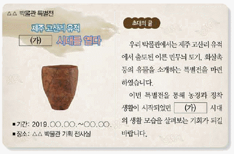
- 주로 동굴이나 막집에 거주하였다.
- 가락바퀴를 이용하여 실을 뽑았다.
- 명도전을 이용하여 중국과 교역하였다.
- 철제 농기구를 사용하여 농사를 지었다.
- 의례 도구로 청동 거울과 방울 등을 제작하였다.
(정답률: 83%)

2. 다음 자료에 해당하는 나라에 대한 설명으로 옳은 것은? [2점]
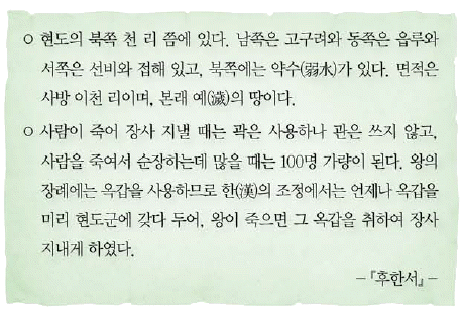
- 읍군, 삼로 등의 군장이 있었다.
- 혼인 풍속으로 민며느리제가 있었다.
- 12월에 영고라는 제천 행사를 열였다.
- 신성 구역인 소도에서 천군이 제사를 주관하였다.
- 읍락 간의 경계를 중시하는 책화라는 풍습이 있었다.
(정답률: 82%)
3. (가) 국가의 문화유산으로 옳은 것은? [2점]
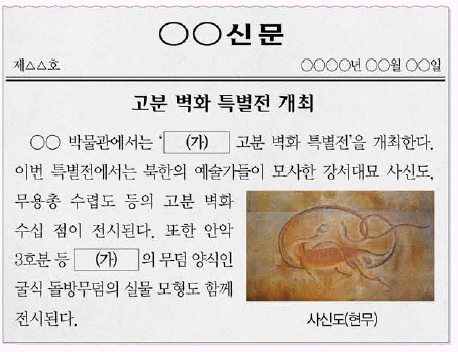
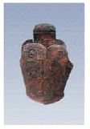
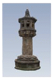
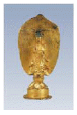
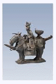
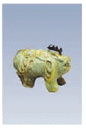
(정답률: 78%)
4. 다음 정책을 실시한 왕에 대한 설명으로 옳은 것은? [2점]
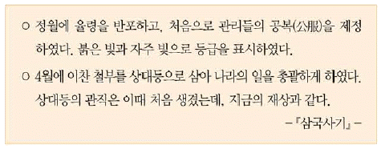
- 이사부를 보내 우산국을 복속시켰다.
- 관료전을 지급하고 녹읍을 폐지하였다.
- 거칠부로 하여금 국사를 편찬하게 하였다.
- 이차돈의 순교를 계기로 불교를 공인하였다.
- 자장의 건의로 황룡사 구층 목탑을 건립하였다.
(정답률: 79%)
5. (가) 나라에 대한 설명으로 옳은 것은? [1점]
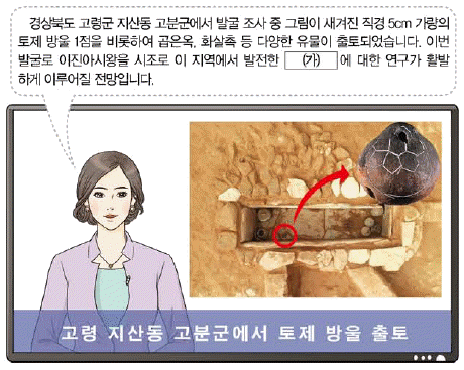
- 후기 가야 연맹을 주도하였다.
- 중앙군으로 2군 6진위를 설치하였다.
- 9주 5소경의 지방 행정 제도를 두었다.
- 귀족 합의제인 화백 회의를 운영하였다.
- 왕족인 부여씨와 8성의 귀족이 지배층을 이루었다.
(정답률: 88%)
6. (가)에 들어갈 내용으로 옳은 것은? [2점]
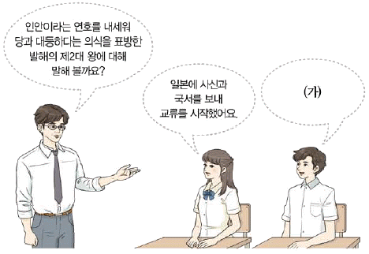
- 낙랑군을 몰아냈어요.
- 국호를 남부여로 바꿨어요.
- 장문휴를 보내 등주를 공격했어요.
- 3성 6부의 중앙 관제를 정비했어요.
- 5경 15부 62주의 지방 행정 제도를 확립했어요.
(정답률: 70%)
7. 다음 상황이 나타난 시기를 연표에서 옳게 고른 것은? [3점]
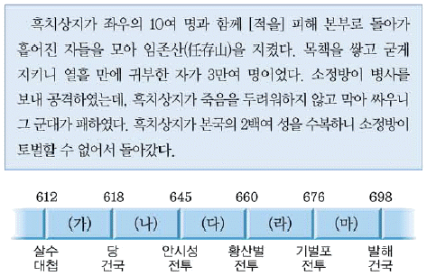
- (가)
- (나)
- (다)
- (라)
- (마)
(정답률: 74%)
8. (가) 제도에 대한 설명으로 옳은 것은? [2점]
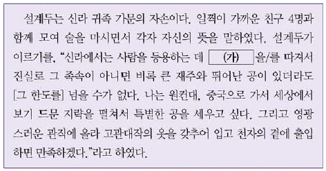
- 진대법이 실시되는 배경이 되었다.
- 원성왕이 인재 등용 제도로 제정하였다.
- 후주 출신인 쌍기의 건의로 실시되었다.
- 권문세족에 대한 견제를 목적으로 시행되었다.
- 집과 수레의 크기 등 일상생활까지 규제하였다.
(정답률: 85%)
9. 다음 글을 작성한 인물이 활동한 시기의 사실로 옳은 것은? [2점]
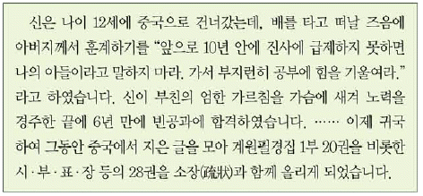
- 김흠돌이 반란을 도모하였다.
- 최승로가 시무 28조를 올렸다.
- 원광이 세속 5계를 제시하였다.
- 원종과 애노가 사벌주에서 봉기하였다.
- 김춘추가 진골 출신 최초로 왕위에 올랐다.
(정답률: 63%)
10. (가)에 들어갈 문화유산으로 옳은 것은? [3점]
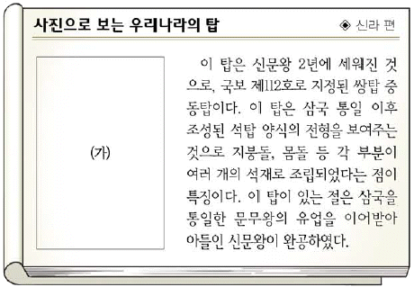
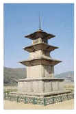
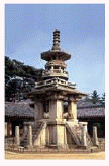
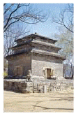
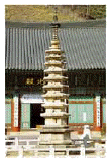
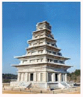
(정답률: 46%)
11. 밑줄 그은 ‘폐하’에 대한 설명으로 옳은 것은? [2점]
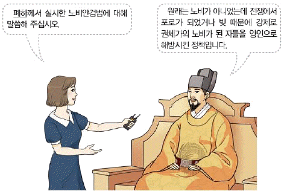
- 12목을 설치하고 지방관을 파견하였다.
- 신돈을 등용하고 전민변정도감을 두었다.
- 민생 안정을 위해 흑창을 처음 설치하였다.
- 주전도감을 설치하여 해동통보를 발행하였다.
- 광덕, 준풍 등의 독자적인 연호를 사용하였다.
(정답률: 82%)
12. (가) 인물에 대한 설명으로 옳은 것은? [2점]
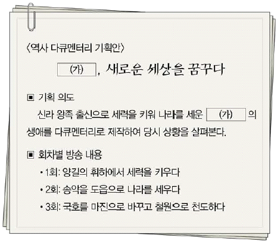
- 후당, 오월에 사신을 파견하였다.
- 광평성 등 각종 정치 기구를 마련하였다.
- 청해진을 설치하여 해상 무역을 전개하였다.
- 일리천 전투에서 신검의 군대를 격퇴하였다.
- 신라의 금성을 습격하여 경애왕을 죽게 하였다.
(정답률: 79%)
13. 다음 상황 이후에 전개된 사실로 옳은 것은? [3점]
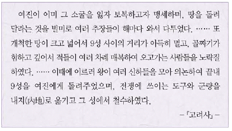
- 강감찬이 귀주에서 외적을 격퇴하였다.
- 강조가 장변을 일으켜 왕을 폐위하였다.
- 이자겸이 금의 사대 요구 수용을 주장하였다.
- 서희가 외교 담판을 벌여 강동 6주를 획득하였다.
- 부여성에서 비사성에 이르는 천리장성이 축조되었다.
(정답률: 69%)
14. 밑줄 그은 ‘정책’의 내용으로 옳은 것은? [2점]
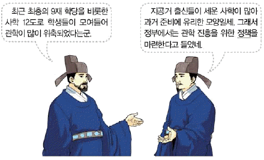
- 독서삼품과를 시행하였다.
- 초계문신제를 실시하였다.
- 수도에 4부 학당을 두었다.
- 전문 강좌인 7재를 개설하였다.
- 경당을 설립하여 학문을 가르쳤다.
(정답률: 79%)
15. 다음 자료에 나타난 시기의 경제 상황으로 옳은 것은? [3점]
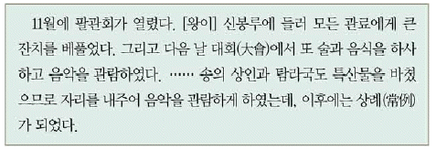
- 집집마다 부경이라는 창고가 있었다.
- 경시서가 수도의 시전을 감독하였다.
- 감자, 고구마 등의 구황 작물이 재배되었다.
- 모내기법 등을 소개한 농가집성이 편찬되었다.
- 국경 지대에서 개시 무역과 후시 무역이 이루어졌다.
(정답률: 73%)
16. (가)에 들어갈 내용으로 옳은 것은? [1점]
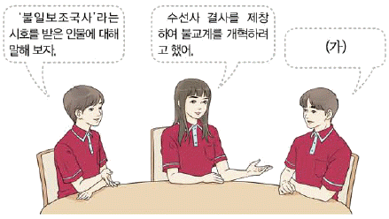
- 무애가를 지어 불교 대중화에 힘썼어.
- 화엄일승법계도를 지어 화엄 사상을 정리했어.
- 불교 교단 통합을 위해 해동 천태종을 개창했어.
- 인도와 중앙아시아를 여행하고 왕오천축국전을 남겼어.
- 돈오점수를 주장하며 수행 방법으로 정혜쌍수를 내세웠어.
(정답률: 70%)
17. 다음 자료에 나타난 시기의 사회 모습으로 옳은 것은? [2점]
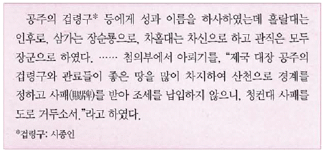
- 서얼이 통청 운동을 전개하였다.
- 웅천주 도독 김헌창이 반란을 일으켰다.
- 만적이 개경에서 신분 해방을 도모하였다.
- 변발과 호복이 지배층을 중심으로 유행하였다.
- 망이ㆍ망소이가 가혹한 수탈에 저항하여 봉기하였다.
(정답률: 69%)
18. 밑줄 그은 ‘이 책’에 대한 설명으로 옳은 것은? [2점]
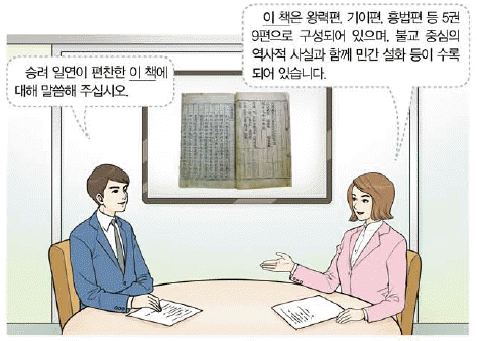
- 기전체 형식으로 서술되었다.
- 남북국이라는 용어를 처음 사용하였다.
- 사초, 시정기 등을 바탕으로 편찬되었다.
- 단군왕검의 건국 이야기가 기록되어 있다.
- 현존하는 우리나라 최고(最古)의 역사서이다.
(정답률: 77%)
19. 다음 자료에 해당하는 정치 기구에 대한 설명으로 옳은 것은? [2점]
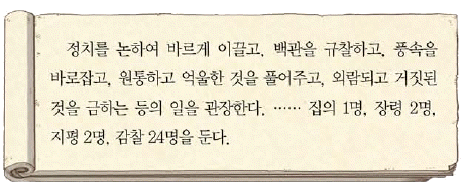
- 수도의 치안과 행정을 주관하였다.
- 고려의 삼사와 같은 역할을 하였다.
- 조광조를 비롯한 사림의 건의로 혁파되었다.
- 임진왜란을 거치면서 국정 최고 기구로 성장하였다.
- 5품 이하 관리의 임명 과정에서 서경권을 행사하였다.
(정답률: 57%)
20. 밑줄 그은 ‘이 왕’의 재위 기간에 있었던 사실로 옳은 것은? [1점]
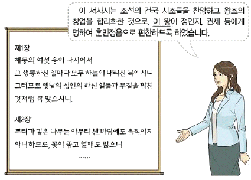
- 훈련 교범인 무예도보통지가 편찬되었다.
- 전통 한의학을 정리한 동의보감이 간행되었다.
- 최초로 100리 척을 사용한 동국지도가 제작되었다.
- 우리 풍토에 맞는 농법을 소개한 농사직설이 간행되었다.
- 각 도의 지리, 풍속 등이 수록된 동국여지승람이 편찬되었다.
(정답률: 83%)
21. (가), (나) 사이의 시기에 있었던 사실로 옳은 것은? [3점]
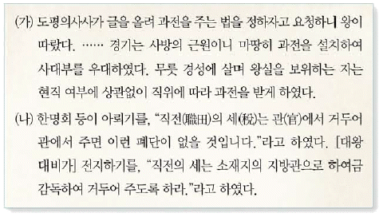
- 백성에게 정전을 지급하였다.
- 양전 사업을 실시하여 지계를 발급하였다.
- 관등에 따라 관리에게 전지와 시지를 차등 지급하였다.
- 개국 공신에게 인품, 공로를 기준으로 역분전을 지급하였다.
- 수신전, 휼양전 등의 명목으로 세습되는 토지를 폐지하였다.
(정답률: 58%)
22. (가) 왕이 실시한 정책으로 옳은 것은? [2점]
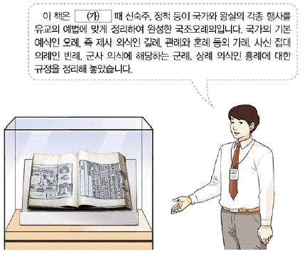
- 경기도에 한하여 대동법을 실시하였다.
- 학문 연구 기관으로 집현전을 설치하였다.
- 조선의 기본 법전인 경국대전을 반포하였다.
- 문하부 낭사를 분리하여 사간원으로 독립시켰다.
- 현량과를 실시하여 신진 사림을 등용하고자 하였다.
(정답률: 72%)
23. 다음 검색창에 들어갈 인물의 활동으로 옳은 것은? [2점]
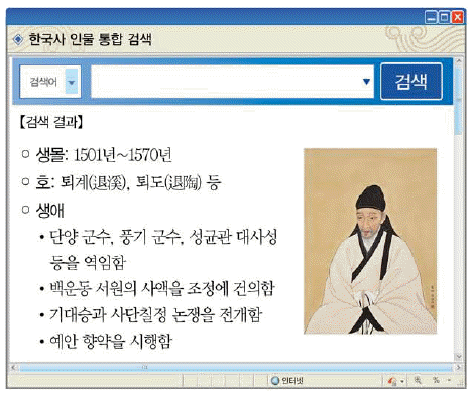
- 양명학을 연구하여 강화 학파를 형성하였다.
- 명에 대한 의리를 내세워 기축봉사를 올렸다.
- 군주의 도를 도식으로 설명한 성학십도를 지었다.
- 다양한 개혁 방안을 제시한 동호문답을 저술하였다.
- 재상 중심의 정치를 강조한 조선경국전을 편찬하였다.
(정답률: 79%)
24. 밑줄 그은 ‘이 부대’에 대한 설명으로 옳은 것은? [2점]
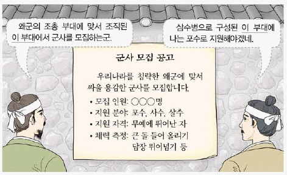
- 최씨 무신 정권의 군사적 기반이었다.
- 급료를 받는 상비군이 주축을 이루었다.
- 국경 지역인 북계와 동계에 배치되었다.
- 이종무가 지위 아래 대마도 정벌에 참여하였다.
- 국왕의 친위 부대로 수원 화성에 외영을 두었다.
(정답률: 76%)
25. 다음 자료를 활용한 탐구 활동으로 가장 적절한 것은? [2점]
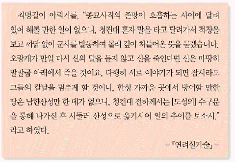
- 삼별초의 이동 경로를 찾아본다.
- 통신사의 활동 내용을 살펴본다.
- 위화도 회군의 결과를 알아본다.
- 계해약조의 체결 과정을 조사한다.
- 삼전도비의 건립 배경을 파악한다.
(정답률: 73%)
26. (가)에 대한 설명으로 옳은 것은? [2점]
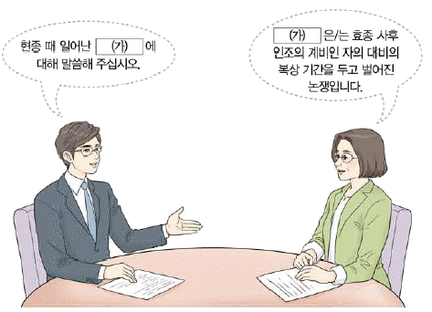
- 사림과 훈구의 갈등이 원인이 되었다.
- 서인과 남인 사이에 발생한 전례 문제이다.
- 북인이 정국을 주도하던 시기에 전개되었다.
- 외척 세력인 대윤과 소윤의 대립으로 일어났다.
- 동인이 남인과 북인으로 분열되는 결과를 가져왔다.
(정답률: 75%)
27. 밑줄 그은 ‘이 왕’의 업적으로 옳지 않은 것은? [2점]
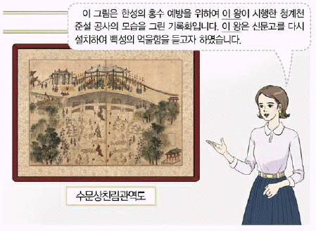
- 속대전을 편찬하여 통치 체제를 정비하였다.
- 기유약조를 체결하여 일본과의 무역을 재개하였다.
- 동국문헌비고를 간행하여 역대 문물을 정리하였다.
- 균역법을 실시하여 군역의 부담을 줄이고자 하였다.
- 탕평비를 건립하여 붕당의 폐혜를 경계하고자 하였다.
(정답률: 60%)
28. 다음 글을 쓴 인물에 대한 설명으로 옳은 것은? [1점]
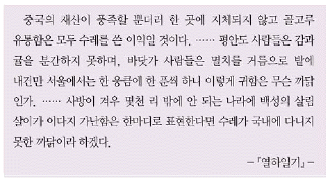
- 양반전에서 양반의 위선과 무능을 풍자하였다.
- 북학의에서 절약보다 적절한 소비를 강조하였다.
- 곽우록에서 토지 매매를 제한하는 한전론을 제시하였다.
- 우서에서 사농공상의 직업적 평등과 전문화를 주장하였다.
- 색경에서 담배, 수박 등의 상품 작물 재배법을 소개하였다.
(정답률: 65%)
29. 밑줄 그은 ‘이 시기’에 볼 수 있는 모습으로 적절하지 않은 것은? [2점]
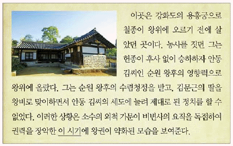
- 이양선의 출몰을 보고하는 수군
- 군정의 문란으로 고통 받는 농민
- 삼정이정청 설치를 건의하는 관리
- 조선통보를 주조하는 관청 소속 장인
- 왕조의 교체를 예언한 정감록을 읽고 있는 양반
(정답률: 46%)
30. 다음 특별전에 전시될 그림으로 가장 적절한 것은? [1점]
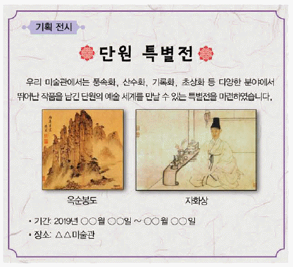
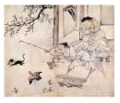
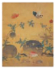
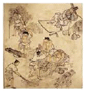
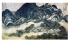
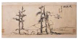
(정답률: 52%)
31. (가) 인물이 추진한 정책으로 옳은 것은? [2점]
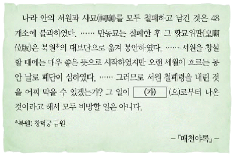
- 나선 정벌을 위해 조총 부대를 파견하였다.
- 청과의 경계를 정한 백두산정계비를 세웠다.
- 신유박해로 수많은 천주교인들을 처형하였다.
- 대전통편을 편찬하여 통치 체제를 정비하였다.
- 환곡의 폐단을 시정하고자 사창제를 실시하였다.
(정답률: 68%)
32. (가) 지역에서 있었던 사실로 옳지 않은 것은? [3점]
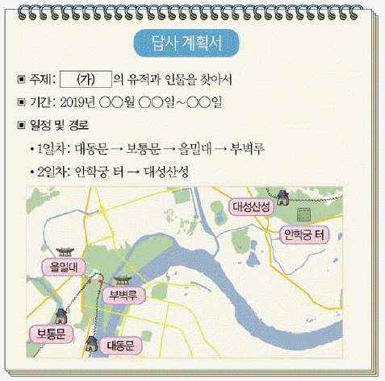
- 제1차 미ㆍ소 공동 위원회가 개최되었다.
- 안창호가 민족 교육을 위해 대성 학교를 설립하였다.
- 고무 공장 노동자 강주룡이 노동 쟁의를 전개하였다.
- 미국 상선 제너럴 셔먼호가 관민들에 의해 불태워졌다.
- 조만식 등을 중심으로 조선 물산 장려화가 결성되었다.
(정답률: 35%)
33. 밑줄 그른 ‘조약’에 대한 설명으로 옳은 것은? [2점]
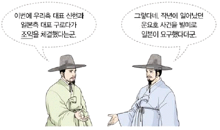
- 방곡령을 선포할 수 있는 조항을 명시하였다.
- 메가타가 재정 고문으로 부임하는 근거가 되었다.
- 외국에 대한 최혜국 대우를 처음으로 규정하였다.
- 부산 외 2곳에 개항장이 설치되는 결과를 가져왔다.
- 고종이 헤이그 특사를 파견하여 부당성을 알리고자 하였다.
(정답률: 75%)
34. (가)~(라)를 일어난 순서대로 옳게 나열한 것은? [3점]
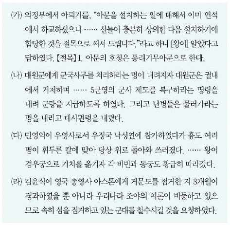
- (가)-(나)-(다)-(라)
- (가)-(나)-(라)-(다)
- (나)-(가)-(다)-(라)
- (나)-(가)-(라)-(다)
- (다)-(나)-(가)-(라)
(정답률: 48%)
35. (가), (나) 사절단에 대한 설명으로 옳은 것은? [2점]
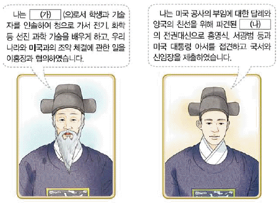
- (가)-귀국할 때 조선책략을 가지고 들어왔다.
- (가)-무기 제조 공장인 기기창 설립의 계기를 마련하였다.
- (나)-보고 들은 내용을 해동제국기로 남겼다.
- (나)-해국도지, 영환지략을 들여와 국내에 소개하였다.
- (가), (나)-암행어사 형태로 비밀리에 파견되었다.
(정답률: 69%)
36. (가) 시기에 있었던 사실로 옳은 것은? [2점]
- 정부와 농민군 사이에 전주 화약이 체결되었다.
- 교조 신원을 요구하는 삼례 집회가 개최되었다.
- 농민군이 황토현 전투에서 관군에게 승리하였다.
- 사태 수습을 위해 이용태가 안핵사로 파견되었다.
- 전봉준이 농민들을 이끌고 고부 관아를 습격하였다.
(정답률: 75%)
37. 밑줄 그은 ‘의병’에 대한 설명으로 옳은 것은? [1점]
- 단발령의 시행에 반발하여 봉기하였다.
- 민종식이 이끈 부대가 홍주성을 점령하였다.
- 국제법상 교전 단체로 승인해 줄 것을 요구하였다.
- 의병 부대가 연합하여 서울 진공작전을 전개하였다.
- 조선총독부에 국권반환 요구서를 제출하고자 하였다.
(정답률: 65%)
38. (가) 단체의 활동으로 옳은 것은? [2점]
- 일본의 황무지 개간권 요구를 저지하였다.
- 러시아의 절영도 조차 요구에 반대하였다.
- 고종의 강제 퇴위 반대 운동을 전개하였다.
- 계몽 서적 출판을 위해 태극 서관을 설립하였다.
- 일본에게 진 빚을 갚자는 국채 보상 운동을 주도하였다.
(정답률: 42%)
39. (가)에 대한 설명으로 옳은 것은? [3점]
- 총사령 양세봉의 지휘아래 활동하였다.
- 미국과 연계하여 국내 진공 작전을 계획하였다.
- 쌍성보 전투에서 한ㆍ중 연합 작전을 전개하였다.
- 간도 참변 이후 조직을 정비하고 자유시로 이동하였다.
- 중국 관내(關內)에서 조직된 최초의 한인 무장 부대였다.
(정답률: 58%)
40. 다음 공고가 발표된 이후 대한민국 임시 정부의 활동으로 옳은 것은? [3점]
- 파리 강화 회의에 독립 청원서를 제출하였다.
- 삼균주의에 바탕을 둔 건국 강령을 발표하였다.
- 무장 투쟁을 위해 육군 주만 참의부를 조직하였다.
- 국민 대표 회의를 열어 독립운동의 방향을 논의하였다.
- 임시 사료 편찬회를 두어 한ㆍ일 관계 사료집을 간행하였다.
(정답률: 61%)
41. (가) 인물에 대한 설명으로 옳은 것은? [2점]
- 양기탁 등과 함께 신민회를 조직하였다.
- 광복에 대비하여 조선 건국 동맹을 결성하였다.
- 봉오동 전투에서 일본군을 상대로 승리를 거두었다.
- 독립군을 양성하기 위하여 신흥 강습소를 설립하였다.
- 독립 투쟁 과정을 정리한 한국독립운동지혈사를 저술하였다.
(정답률: 57%)
42. 밑줄 그은 ‘이 운동’에 대한 설명으로 옳은 것은? [1점]
- 미쓰야 협정이 체결되는 배경이 있었다.
- 신간회가 조사단을 파견하여 지원하였다.
- 대한매일신보의 후원으로 전국적으로 확산되었다.
- 국내에서 민족 유일당 운동이 전개되는 계기가 되었다.
- 배우자 가르치자 다 함께 브나로드를 구호로 내세웠다.
(정답률: 63%)
43. (가) 단체에 대한 설명으로 옳은 것은? [2점]
- 태평양 전쟁 발발 이후에 조직되었다.
- 고종의 밀지를 받아 결성된 비밀 단체였다.
- 만민 공동회를 열어 민권 신장을 추구하였다.
- 일제가 조작한 1⑤인 사건으로 큰 타격을 입었다.
- 단원 일부가 황푸 군관 학교에 입학해 군사 훈련을 받았다.
(정답률: 74%)
44. 다음 영화가 처음 개봉되었던 당시에 볼 수 있는 모습으로 가장 적절한 것은? [3점]
- 카프(KAPF)에서 활동하는 신경향파 작가
- 원각사에서 은세계 공연을 관람하는 학생
- 육영 공원에서 영어를 가르치는 미국인 교사
- 전차 개통식에 참여하는 한성 전기 회사 직원
- 손기정 선수의 올림픽 우승 소식을 보도하는 기자
(정답률: 48%)
45. 밑줄 그은 ‘이 시기’에 시행된 일제의 정책으로 옳은 것은? [1점]
- 한국인에 한하여 적용하는 조선 태형령을 시행하였다.
- 민족 자본의 성장을 억제하기 위해 회사령을 공포하였다.
- 조선 사상범 예방 구금령을 통해 독립운동을 탄압하였다.
- 식민지 교육 방침을 규정한 제1차 조선 교육령을 제정하였다.
- 근대적 토지 소유권 확립을 명분으로 토지 조사 사업을 실시하였다.
(정답률: 71%)
46. (가), (나) 사이의 시기에 있었던 사실로 옳은 것은? [2점]
- 좌우 합작 7원칙이 발표되었다.
- 조선 건국 준비 위원회가 결성되었다.
- 모스크바 3국 외상 회의가 개최되었다.
- 반민족 행위 특별 조사 위원회가 구성되었다.
- 유상 매수, 유상 분배 원칙의 농지 개혁법이 재정되었다.
(정답률: 59%)
47. (가) 정부 시기에 있었던 사실로 옳은 것은? [2점]
- 통일 주체 국민 회의 대의원이 선출되었다.
- 농촌 근대화를 표방한 새마을 운동이 전개되었다.
- 사회 정화를 명분으로 삼청 교육대가 설치되었다.
- 한ㆍ독 정부 간의 협정에 따라 서독으로 광부가 파견되었다.
- 국가보안법 개정안을 통과시킨 이른바 보안법 파동이 일어났다.
(정답률: 54%)
48. 다음 사실이 있었던 정부 시기의 경제 상황으로 옳은 것은? [2점]
- 경제 협력 개발 기구(OECD)에 가입하였다.
- 제3차 경제 개발 5개년 계획이 추진되었다.
- 한ㆍ칠레 자유 무역 협정(FTA)이 체결되었다.
- 대통령 긴급 명령으로 금융 실명제가 실시되었다.
- 3저 호황으로 물가가 안정되고 수출이 증가하였다.
(정답률: 71%)
49. 다음 자료에 해당하는 민주화 운동에 대한 설명으로 옳은 것은? [1점]
- 한ㆍ일 국교 정상화에 반대하여 일어났다.
- 관련 기록물이 유네스코 세계 기록유산으로 등재되었다.
- 대통령 중심제에서 의원 내각제로 바뀌는 계기가 되었다.
- 3ㆍ1 민주 구국 선언을 통해 긴급 조치 철폐 등을 요구하였다.
- 4ㆍ13 호헌 조치에 반발하여 호헌 철폐 등의 구호를 내세웠다.
(정답률: 69%)
50. 다음 경축사를 발표한 정부의 통일 노력으로 옳은 것은? [2점]
- 7ㆍ4 남북 공동 성명을 발표하였다.
- 남북한이 유엔에 동시 가입하였다.
- 6ㆍ15 남북 공동 선언을 채택하였다.
- 한반도 비핵화 공동 선언에 서명하였다.
- 최초의 이산가족 고향 방문을 실현하였다.
(정답률: 62%)